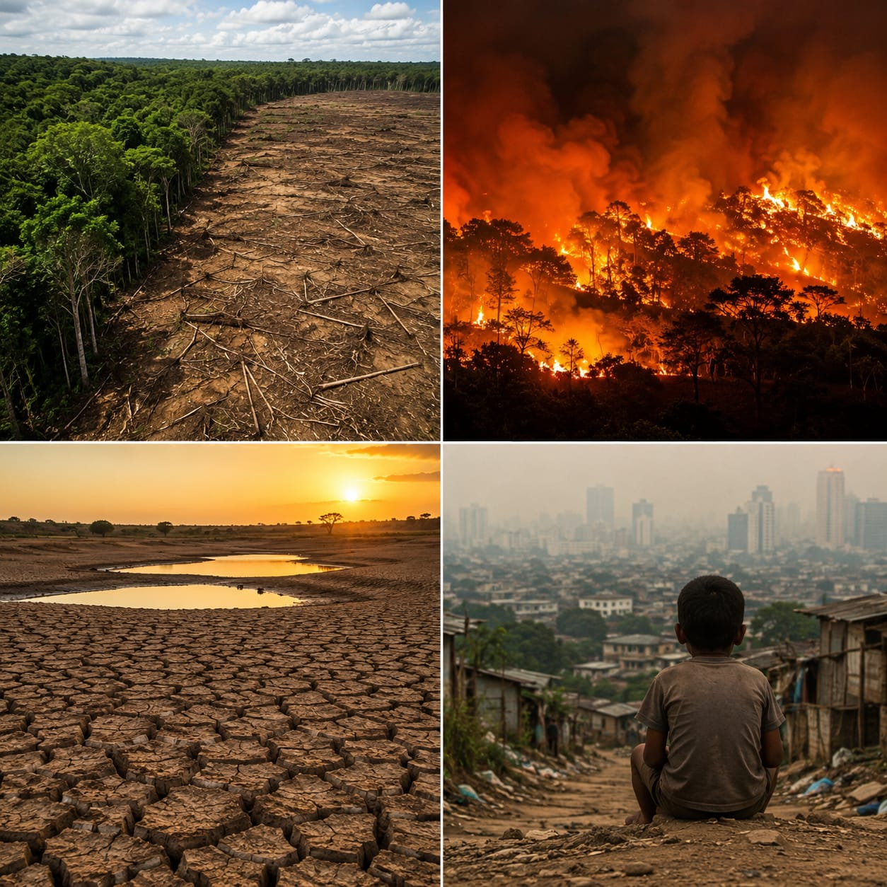

Os impactos ambientais são as mudanças causadas no meio ambiente pelas ações humanas. Eles surgem quando atividades como desmatamento, queimadas, poluição, desperdício de recursos naturais e produção sem planejamento acabam alterando o equilíbrio da natureza.
Esses impactos afetam diretamente o solo, a água, o ar, os animais e as plantas. Mas seus efeitos também chegam às pessoas, podendo causar problemas como escassez de água, aumento da poluição, mudanças climáticas e redução da qualidade de vida.
Muitas vezes, os impactos ambientais têm origem em atividades necessárias para o desenvolvimento da sociedade, como a agricultura, a pecuária, a indústria e os transportes.
No entanto, quando essas atividades são realizadas sem responsabilidade e sem preocupação com a preservação dos recursos naturais, os danos podem se tornar cada vez maiores.
